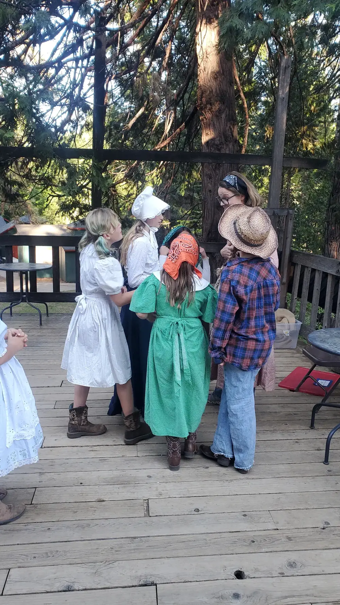
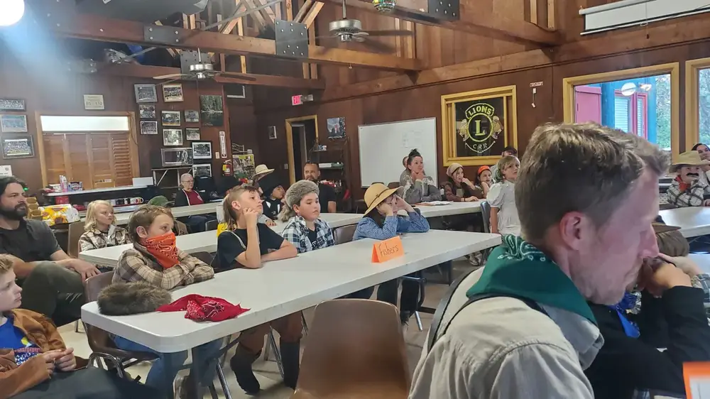
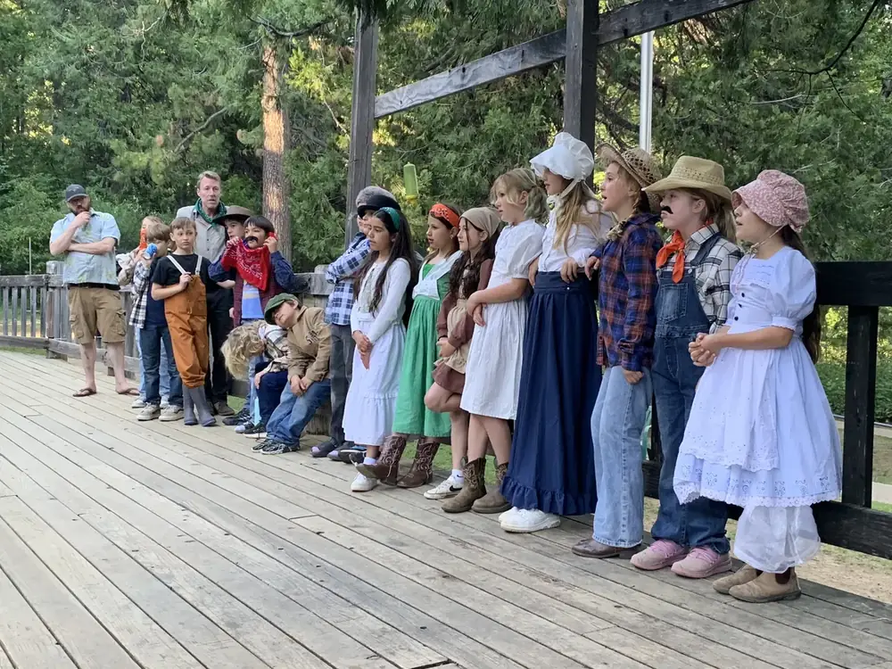
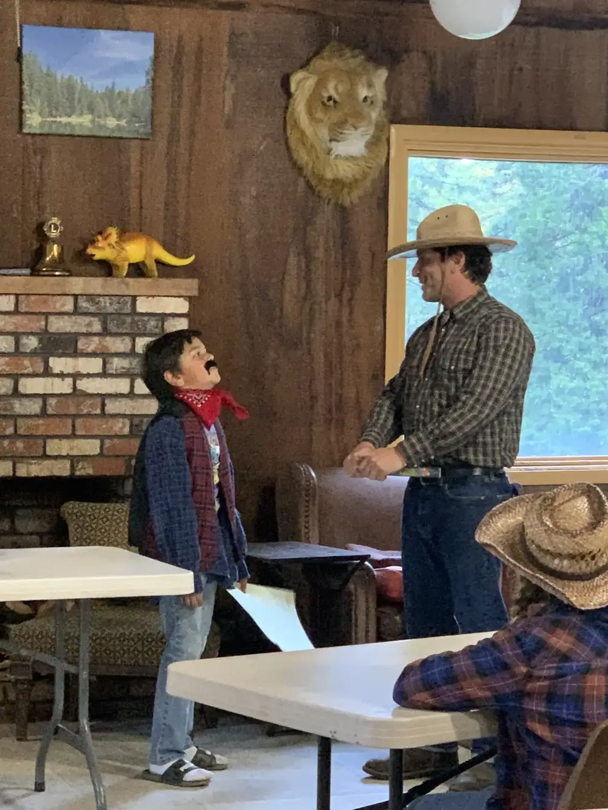

Act III · Thursday Evening, May 14
Judge Sawyer is coming to town. Every group has one evening to make their case. The ruling is real. The consequences were permanent. And someone at the table will be told there is no seat for them.
After two days of living as miners, merchants, saloon-goers, and gold panners, the kids changed into costumes and became something more: witnesses at a real historical hearing.
Each student was assigned to one of five interest groups. With a parent coach helping shape — not take over — their argument, each group prepared an opening statement, listened to the others, and came back with a rebuttal.
At the front of the room: Judge Lorenzo Sawyer. Behind him, 141 years of consequence.




Working for the North Bloomfield Mining Company
Most miners in 1884 weren't panning a creek — they worked for the company that owned the monitors. The Malakoff operation employed hundreds. Shut it down and every one of them is out of work, the grubstakes come due, and the town goes with it.
Their argument: We were here first. We built this. Our rights to the water were established before the farmers arrived downstream.
Central Valley, downstream
The tailings didn't stay in the mountains. They flowed into the rivers, filled the riverbeds, and buried the farms of the Central Valley under feet of grey slickens. Fields that had grown wheat and orchards were now under sand.
Their argument: We don't want their gold. We want our land back. You cannot have the right to bury your neighbor's farm.
Yuba, Feather, and American Rivers
Salmon once ran thick in these rivers. By 1875, the spawning beds were buried under silt and the fish were gone — not depleted, extinct in these waters. The fishers watched it happen year by year and nobody listened.
Their argument: The rivers are dead. You can rebuild a farm. You cannot bring back a salmon run once it's gone.
Backers of the North Bloomfield Gravel Mining Company
The monitors, the 40-mile ditch, the drain tunnel drilled through a mile of bedrock — all of it cost $3 million. The investors put up that money expecting a return. The gold is still in the ground. The operation just started paying off.
Their argument: This is private property and private investment. A ruling against us is confiscation without compensation.
Townspeople, saloon keepers, storekeepers
North Bloomfield exists because the mine exists. Every store, saloon, hotel, and smithy in town depends on the wages the company pays. If the monitors stop, the workers leave. If the workers leave, the town dies — and everyone in it.
Their argument: This isn't just a mining company. This is an entire community. Think about who you're really shutting down.
In the middle of the proceedings, a character arrived at the Town Hall without a group, without a seat, without a role at the table: a Chinese miner or a Nisenan person — someone whose life had been upended by the Gold Rush before the first monitor was ever built.
They were told there was no seat for them. Asked to leave.
That moment — quiet, uncomfortable, not explained — was part of the lesson. Judge Sawyer's ruling was a landmark. But the hearing only had five chairs. Some people weren't invited to the argument at all, even though they had more at stake than anyone in the room.
The arguments the kids made had already been made — in newspapers, courtrooms, and legislative committees. These are the real ones.
The Farmers
"Fertile farms, immense orchards, blooming gardens, costly improvements, and homes happy with all the surroundings that embellish communities — all are engulfed in a common destruction, and their owners have gone out bankrupted from the merciless invasion of a foe that has left them penniless."
— Majority Report, Legislative Committee on Mining Debris, 1878
A Farmer, plainly
"I have no objection to miners digging out all the gold they can find, but I don't want them to send the whole side of a hill down upon my ranch and bury me and all I have."
— James Keyes, farmer, 1874
The Miners
"The farmers of the valleys fail to remember that they located down on farms after the miners had acquired rights above the streams. Among the rights acquired by the miners was that of 'dumpage' into the tributaries of the rivers."
— Grass Valley Daily Union, January 1876
The Fish Commission
"The salmon certainly passed up these streams for a few years after extensive mining began, but their spawning beds being covered by sediment, their eggs would not mature; and as the old fish died or were killed, they became extinct in these streams."
— Report of the Commissioners of the Fisheries, 1875
The Governor
"The Sacramento Valley will, at no distant date, be rendered uninhabitable; that the rivers will cease to be navigable; that the cities of Marysville, Sacramento, and Colusa will be overwhelmed."
— Governor George Perkins, January 13, 1881
An eyewitness, 1868
"Tornado, flood, earthquake and volcano combined could hardly make greater havoc, spread wider ruin and wreck, than are to be seen everywhere in the track of the larger gold-washing operations."
— Samuel Bowles, 1868
January 7, 1884 · San Francisco
"The defendant companies are perpetually enjoined and restrained from discharging or dumping into the Yuba River any of the tailings, boulders, cobble stones, gravel, sand, debris, or refuse matter."
— Judge Lorenzo Sawyer · Woodruff v. North Bloomfield Gravel Mining Company
pages in the ruling — front-page news across the state
first environmental ruling in United States history
hydraulic mining at Malakoff essentially ended
By 1900 the population had shrunk by half. Buildings stood empty. WWI brought demolitions for lumber. Prohibition closed the saloons. The Depression brought former residents back — for free shelter in the shells of their old homes. By 1950, fewer than 20 permanent residents remained.
The Yuba River had been raised 50 feet above its 1849 level by sediment. Recovery took generations. The salmon did not return to the Yuba during the lifetimes of anyone who watched them disappear. Some runs were eventually restored — through deliberate, expensive effort, more than a century later.
The 40-mile ditches and flumes built to feed the monitors didn't disappear — they were repurposed. PG&E bought many of them at the turn of the century to generate electricity. Some of those original Gold Rush ditches are still in use today.
The Sawyer Decision marked a turning point: after 1884, agriculture — not mining — became California's primary industry. The Central Valley that was nearly buried under tailings became the most productive farmland in the world. The ruling changed what California is.
When Judge Sawyer announced his ruling, the kids were brought back to 2026 for a debrief. The questions were simple: Who won? Who didn't get a seat at the table? Would you rule differently? What's still unresolved?
The Nisenan people — whose territory the mine sat on, whose food sources the Gold Rush destroyed before the first monitor was ever built — were never part of the legal case. The Sawyer Decision protected rivers and farms. It did not address what had already been taken from the people who lived there first.
That gap is still open.